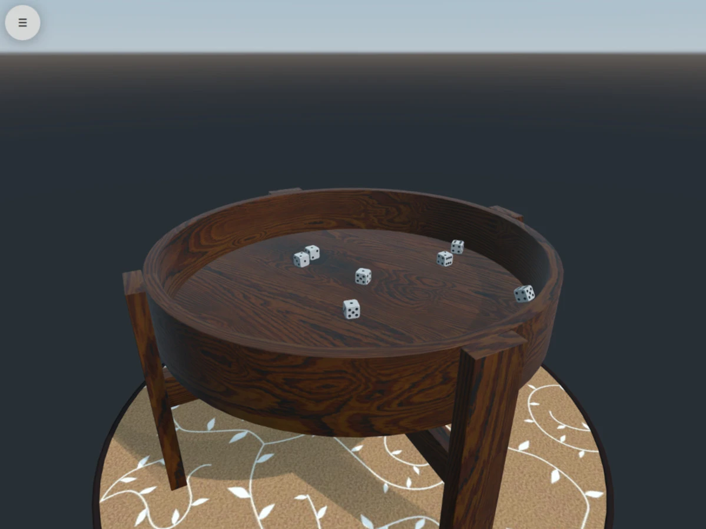

Dice
A dice throwing application using Qt Quick 3D Physics and other Qt Modules.

Overview
This example application allows you to roll some dice on a table. It's implemented with QML and relies on a number of Qt modules that are detailed in the following sections.
This particular example is also available in the google play store as Qt Dice.
As with any Qt example you can of course still build the application yourself for your target of choice.
Simulating the physics of rolling dice
Dice demonstrates using Qt Quick 3D Physics for the physical simulation of dice and a wooden table. The rendering is done with components from Qt Quick 3D. For information on how this can be achieved, see the Qt Quick 3D Physics - Custom Shapes Example.
Using sensor input to trigger a roll
On compatible targets, using Qt Sensors API enables using accelerometer output to detect when the device is shaken, triggering a dice roll. For more information on using an accelerometer, see the Sensors Showcase example.
Adding sound effects
Using Qt Multimedia, sound effects are added for a more immersive experience. See the SoundEffect QML type more for information.
Implementing a UI for changing simulation settings
A Qt Quick UI is provided for configuring the physical material of the simulated dice, the magnitude of gravity, and the number and size of dice.
Running the Example
To run the example from Qt Creator, open the Welcome mode and select the example from Examples. For more information, visit Building and Running an Example.
Note: The example makes use of the Qt Quick 3D, Qt Multimedia, Qt Quick 3D Physics and Qt Sensors modules which are separate items in the Qt Online Installer. If the example fails to configure, please make sure that you have these required packages installed.